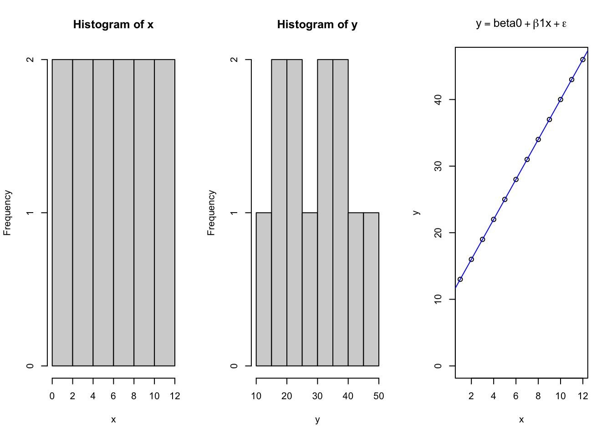
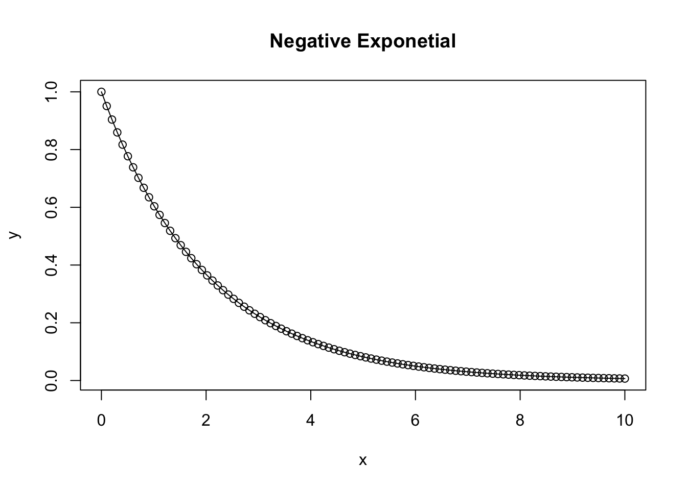
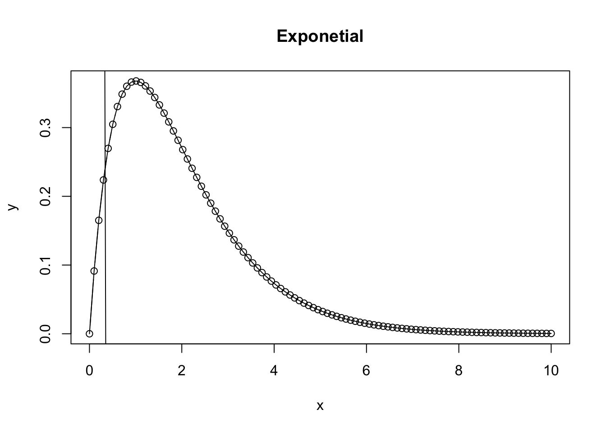
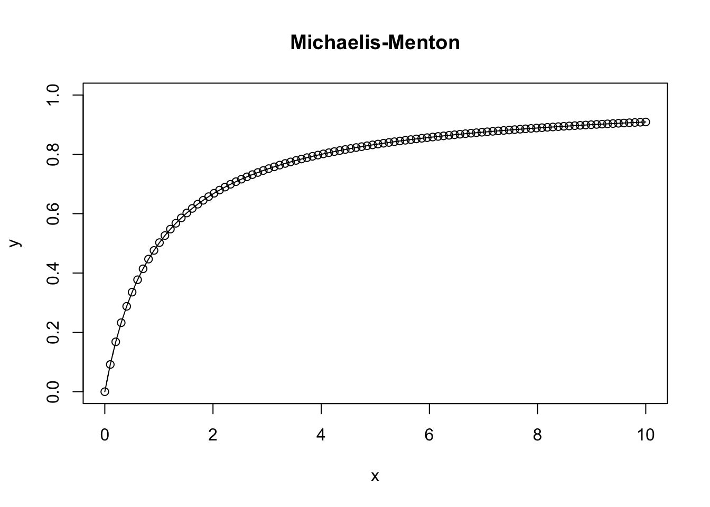
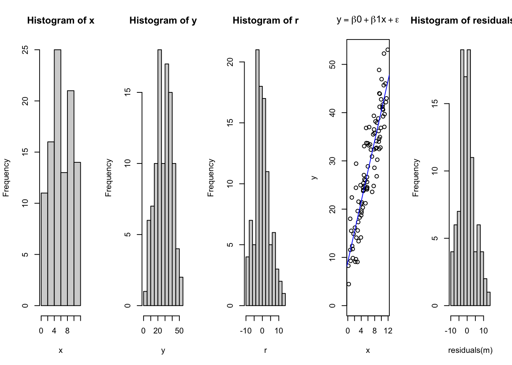

Chapter 4 Deterministic Functions: Understanding function shape, pattern, and meaning of parameters
4.1 Research Objective
The research objective is critical to identifying the Conceptual and the Specific question.
Evaluate the effects of Yeast supplementation during pre-weaning and(or) post-weaning periods on performance (growth, intake, feed efficiency), physiologic (e.g., rumen temperature, cortisol, haptoglobin), behavioral, and immunologic responses in newly arrived beef calves.
4.2 Plotting deterministic functions
4.2.1 Linear Model
4.2.1.1 First order quadratic model
R provides the power to consider unique equations and easily see how they describe the relationships between variables. Understanding what the parameters of various functions mean is critical to allow you to estimate what values may take on when looking at the data. However, there is also value in seeing how to create a controlled system that follows a specified pattern, and then assess how consistently the chosen models explain the data. Consider the linear model, which takes the form of \(y=\beta_{o} + \beta_1x + \epsilon\); where \(y\) is the dependent variable \(\beta_o\) is the intercept on the Y axis, \(\beta_1\) is the slope of the \(x\) parameter along the X axis, and \(\epsilon\) is the error for each ith data point along the regression line.
x = seq(1,12, 1) # Independent X parameter placed on the X axis
b0 = 10 # Specify the Y intercept
b1 = 3 # Specify the B1 coefficient i.e. the slope
y = b0 + b1*x
par(mfrow = c(1,3))
hist(x)
hist(y)
{
plot(x,y, ylim = c(0,max(y)), main = expression(y == beta0 + beta*1*x + epsilon))
abline(lm(y~x), col = 'blue')
}
## Warning in summary.lm(lm(y ~ x)): essentially perfect fit: summary may be
## unreliable##
## Call:
## lm(formula = y ~ x)
##
## Residuals:
## Min 1Q Median 3Q Max
## -3.727e-15 -1.897e-15 -5.724e-16 8.545e-16 7.789e-15
##
## Coefficients:
## Estimate Std. Error t value Pr(>|t|)
## (Intercept) 1.000e+01 1.937e-15 5.163e+15 <2e-16 ***
## x 3.000e+00 2.632e-16 1.140e+16 <2e-16 ***
## ---
## Signif. codes: 0 '***' 0.001 '**' 0.01 '*' 0.05 '.' 0.1 ' ' 1
##
## Residual standard error: 3.147e-15 on 10 degrees of freedom
## Multiple R-squared: 1, Adjusted R-squared: 1
## F-statistic: 1.299e+32 on 1 and 10 DF, p-value: < 2.2e-16So here we see a basic linear plot derived from data using a deterministic linear model. Next, we will plot the same data, except adding in an element of expected randomness due to some error associated with measuring the data. #### Second order exponential A negative exponential function takes on the characteristics of \(ae^{bx}\)
a = 1
b = 1
x = seq(0,10,length = 100)
y = a*exp(b*x)
plot.new()
{
plot(x,y, type = 'b', main = 'Exponetial')
lines(x, y)
} #### Negative Exponential
#### Negative Exponential
A negative exponential function takes on the characteristics of \(ae^{-bx}\)
a = 1
b = 0.5
x = seq(0,10,length = 100)
y = a*exp(-b*x)
plot.new()
{
plot(x,y, type = 'b', main = 'Negative Exponetial')
lines(x, y)
}
4.2.1.2 Saturating exponential growth function
a = 1
b = 0.5
x = seq(0,10,length = 100)
y = a*(1-exp(-b*x))
plot.new()
{
plot(x,y, type = 'b', main = 'Saturating Exponential Growth')
lines(x, y)
}
4.2.1.3 Ricker Function.
A Ricker function takes on the characteristics of \(axe^{bx}\)
a = 2
b = 0.5
x = seq(0,10,length = 100)
y = a*x*exp(-b*x)
plot.new()
{
plot(x,y, type = 'b', main = 'Ricker')
lines(x, y)
} What happens as the Ricker function approaches infinity?
What happens as the Ricker function approaches infinity?
a = 1
b = 1
x = seq(0,10,length = 100)
y = a*x*exp(-b*x)
plot.new()
{
plot(x,y, type = 'b', main = 'Exponetial')
lines(x, y)
abline(lm(x~y))
}
4.2.1.4 Michaelis-Menton Equation
Enzyme subjugation or predator-prey relationships.
## Min. 1st Qu. Median Mean 3rd Qu. Max.
## 0.0 2.5 5.0 5.0 7.5 10.0
4.2.1.5 Logistic Function
The basic logistic function \[({e^{a+bx}})/({1+e^{a+bx}})\]
a = 0 # Shifts left to right
b = 1 # Controls inflection point
x = seq(-10,10,length = 100)
summary(x)## Min. 1st Qu. Median Mean 3rd Qu. Max.
## -10 -5 0 0 5 10y = (exp(a+b*x)/(1+exp(a+b*x)))
{
plot(x,y, ylim = c(0,1), type = 'b', main = 'Logistic Function')
lines(x, y)
}
4.3 Stoichasticity
set.seed(1)
x = runif(n = 100, min = 0, max = 12) # Independent X parameter placed on the X axis
b0 = 10 # Specify the Y intercept
b1 = 3 # Specify the B1 coefficient i.e. the slope
r = rnorm(length(x), mean = 0, sd = 5)
y = b0 + b1*x + r
par(mfrow = c(1,5))
hist(x)
hist(y)
hist(r)
plot(x,y, ylim = c(0,max(y)), main = expression(y == beta*0 + beta*1*x + epsilon))
abline(lm(y~x), col = 'blue')
m = lm(y~x)
hist(residuals(m))
##
## Call:
## lm(formula = y ~ x)
##
## Residuals:
## Min 1Q Median 3Q Max
## -9.2489 -2.8111 -0.4353 2.6214 12.5830
##
## Coefficients:
## Estimate Std. Error t value Pr(>|t|)
## (Intercept) 9.1034 1.0291 8.846 3.85e-14 ***
## x 3.1301 0.1473 21.254 < 2e-16 ***
## ---
## Signif. codes: 0 '***' 0.001 '**' 0.01 '*' 0.05 '.' 0.1 ' ' 1
##
## Residual standard error: 4.705 on 98 degrees of freedom
## Multiple R-squared: 0.8217, Adjusted R-squared: 0.8199
## F-statistic: 451.7 on 1 and 98 DF, p-value: < 2.2e-16Notice how this has changed the relationship, and due to the randomness, the intercept is no longer exactly where we placed it? Rather, due to the controlled but intentionally introduced error and random variation in the data, the fit has changed and the intercept, and slope have all been affected. However, they may not be that different. Consider how this relates to our perception of truth, and expectations on the underlying systems has discussed in Module 1.
4.4 Intake vs BW Relationship
## ── Attaching core tidyverse packages ──────────────────────── tidyverse 2.0.0 ──
## ✔ dplyr 1.1.4 ✔ readr 2.1.5
## ✔ forcats 1.0.0 ✔ stringr 1.5.1
## ✔ ggplot2 3.5.1 ✔ tibble 3.2.1
## ✔ lubridate 1.9.3 ✔ tidyr 1.3.1
## ✔ purrr 1.0.2
## ── Conflicts ────────────────────────────────────────── tidyverse_conflicts() ──
## ✖ dplyr::filter() masks stats::filter()
## ✖ dplyr::lag() masks stats::lag()
## ℹ Use the conflicted package (<http://conflicted.r-lib.org/>) to force all conflicts to become errors##
## Attaching package: 'data.table'
##
## The following objects are masked from 'package:lubridate':
##
## hour, isoweek, mday, minute, month, quarter, second, wday, week,
## yday, year
##
## The following objects are masked from 'package:dplyr':
##
## between, first, last
##
## The following object is masked from 'package:purrr':
##
## transposelibrary(readxl) # Reading excel
# Data -----
## BW data -----
excel_sheets(path = '../Data/LAN/LAN_1504_DATA.xlsx')## [1] "Notes" "LAN_1504" "Graphs"
## [4] "Sheet1" "Charts" "date_relative"
## [7] "RawWeight(lbs)" "Day28_IntakeSAS" "ADJ_28Day_Intake"
## [10] "ADJ_28Day_BW" "Day28_RFI" "Day56_IntakeSAS"
## [13] "ADJ_56Day_Intake" "ADJ_56Day_BW" "Day56_RFI"
## [16] "Day70_Intake_SAS" "ADJ_70Day_Intake" "ADJ_Day70_BW"
## [19] "Day70_RFI" "TTBxAnimalxDay" "TTB"
## [22] "AveragexDay" "Final Data" "Day14_outputallday"
## [25] "Day14_outputallhour" "Day42_outputallday" "Day42_outputallhour"
## [28] "outputallday_cmbnd" "outputallhour_combnd" "D-1"
## [31] "D0" "D28" "D56"d.bw = read_excel(path = '../Data/LAN/LAN_1504_DATA.xlsx',
sheet = "RawWeight(lbs)") %>%
as.data.table()
d.bw2 = melt.data.table(data = d.bw, measure.vars = c(7:18), value.name = 'BW', variable.name = 'name')
d.bw2$Day = parse_number(as.character(d.bw2$name))
### Assign day
days = seq(min(d.bw2$Day), max(d.bw2$Day), by = 1)
days = days[days >= 0]
days## [1] 0 1 2 3 4 5 6 7 8 9 10 11 12 13 14 15 16 17 18 19 20 21 22 23 24
## [26] 25 26 27 28 29 30 31 32 33 34 35 36 37 38 39 40 41 42 43 44 45 46 47 48 49
## [51] 50 51 52 53 54 55 56 57 58 59 60 61 62 63 64 65 66 67 68 69 70d.days = data.table(Day = days)
VIDs = data.table(VID = unique(d.bw2$VID))
d.daysvid = merge(days, VIDs, by = NULL) %>%
as.data.table
names(d.daysvid) = c('Day','VID')
names(d.days)## [1] "Day"d.bw3 = merge.data.table(d.daysvid, d.bw2, by = c('VID','Day'), all = T)
## Intake data ----
d.int = read_excel(path = '../Data/LAN/LAN_1504_DATA.xlsx',
sheet = "Day70_Intake_SAS")## [1] "Notes" "LAN_1504" "Graphs"
## [4] "Sheet1" "Charts" "date_relative"
## [7] "RawWeight(lbs)" "Day28_IntakeSAS" "ADJ_28Day_Intake"
## [10] "ADJ_28Day_BW" "Day28_RFI" "Day56_IntakeSAS"
## [13] "ADJ_56Day_Intake" "ADJ_56Day_BW" "Day56_RFI"
## [16] "Day70_Intake_SAS" "ADJ_70Day_Intake" "ADJ_Day70_BW"
## [19] "Day70_RFI" "TTBxAnimalxDay" "TTB"
## [22] "AveragexDay" "Final Data" "Day14_outputallday"
## [25] "Day14_outputallhour" "Day42_outputallday" "Day42_outputallhour"
## [28] "outputallday_cmbnd" "outputallhour_combnd" "D-1"
## [31] "D0" "D28" "D56"## New names:
## • `BVDUR` -> `BVDUR...50`
## • `BVDUR` -> `BVDUR...51`## Classes 'data.table' and 'data.frame': 77 obs. of 69 variables:
## $ Test : logi TRUE TRUE NA TRUE TRUE TRUE ...
## $ VID : num 248 249 276 298 322 346 364 367 453 472 ...
## $ EID : num 9.82e+14 9.82e+14 9.82e+14 9.82e+14 9.82e+14 ...
## $ Pen : num 8 8 6 6 8 6 5 7 6 5 ...
## $ Creep : chr "Control" "Control" "Yeast" "Yeast" ...
## $ Trial : chr "Control" "Control" "Control" "Control" ...
## $ HOBO_ID : num NA NA 11 NA NA NA 5 14 NA NA ...
## $ D_42_BW : num 261 210 177 198 198 ...
## $ Pre_Wean_ADG : num 0.823 0.552 0.693 0.736 0.823 ...
## $ Creep_Gain : num 34.5 23.1 29 30.8 34.5 ...
## $ Shipping_Loss : num -5.44 -4.54 -3.63 -6.8 -3.63 ...
## $ Day28_InitialBW : num 286 224 201 221 231 ...
## $ Day28_ADG : num 1.296 0.829 1.076 0.81 1.529 ...
## $ ADJ_Day28_BW : num 323 247 231 243 274 ...
## $ Day28_MMBW : num 59.8 49.4 46.2 48.8 52 ...
## $ Day28_DMI : num 5.67 5.39 4.59 4.9 5.81 ...
## $ Day28_FCR : num 4.38 6.49 4.26 6.05 3.8 ...
## $ Day28_Residual : num 0.419 0.5342 0.5342 0.0703 0.6198 ...
## $ Day28_Class : chr "High" "High" "High" "Medium" ...
## $ Day56_InitialBW : num 287 223 200 218 233 ...
## $ Day56_ADG : num 1.218 0.946 1.147 1.064 1.298 ...
## $ Day56_BW : num 355 276 264 278 306 ...
## $ Day56_MMBW : num 1.218 0.946 1.147 1.064 1.298 ...
## $ Day56_DMI : num 6.97 6.54 6.24 6.29 7.29 ...
## $ Day56_FCR : num 5.72 6.91 5.44 5.91 5.61 ...
## $ Day56_Residual : num -0.118 0.266 0.266 -0.149 0.376 ...
## $ Day56_Class : chr "Medium" "High" "High" "Medium" ...
## $ Bolus_Temp : logi NA NA NA NA NA NA ...
## $ PWD42_EV : logi NA NA NA NA NA NA ...
## $ D_1_EV : num 0.44 0.389 0.365 0.555 0.662 0.572 0.318 0.362 0.562 0.769 ...
## $ D0_EV : num 0.507 0.478 0.426 0.398 0.639 0.68 0.371 0.374 0.398 0.454 ...
## $ D28_EV : num 0.637 0.528 0.437 0.37 0.53 0.519 0.336 0.391 0.548 0.478 ...
## $ D56_EV : num 0.345 0.085 0.282 0.249 0.455 0.356 0.257 0.293 0.251 0.419 ...
## $ D_1_CS : num 1 3 2 3 2 2 2 3 2 2 ...
## $ D0_CS : num 2 2 3 4 2 2 3 4 1 2 ...
## $ D28_CS : num 0 0 0 0 0 0 0 0 0 0 ...
## $ D56_CS : num 1 2 3 1 1 3 2 3 2 1 ...
## $ AVE_TTB : num 36.2 23.3 69.8 84.1 51.5 ...
## $ Day28_AVE_TTB : num 35 16.3 48.2 93.8 55.3 ...
## $ Day29_56_AVE_TTB : num 31.1 24.5 88.8 79 46.2 ...
## $ Day56_AVE_TTB : num 33.1 20.2 67.3 86.8 50.9 ...
## $ NFIFREQ : num 81 91.4 76.6 85.7 59.2 ...
## $ NFIDUR : num 71787 72473 68058 72939 68627 ...
## $ MEAL_DUR : num 492 800 935 1124 1029 ...
## $ MEAL_FREQ : num 21.6 15 14.3 11.3 12.3 ...
## $ MEAL_INTAKE : num 333 717 720 714 902 ...
## $ SUM_MEAL_DUR : num 9720 10823 11949 11738 11444 ...
## $ MC : num 2.71 3.13 4.26 3.9 3.68 ...
## $ BVFREQ : num 81 91.4 76.6 85.7 59.2 ...
## $ BVDUR...50 : num 6451 7143 7471 5156 8871 ...
## $ BVDUR...51 : num 6451 7143 7471 5156 8871 ...
## $ NFIFREQsd : num 81 91.4 76.6 85.7 59.2 ...
## $ NFIDURsd : num 71787 72473 68058 72939 68627 ...
## $ MEALDURsd : num 492 800 935 1124 1029 ...
## $ MEALFREQsd : num 21.6 15 14.3 11.3 12.3 ...
## $ MEALINTAKEsd : num 333 717 720 714 902 ...
## $ SUMMEALDURsd : num 9720 10823 11949 11738 11444 ...
## $ BVFREQsd : num 81 91.4 76.6 85.7 59.2 ...
## $ BVDURsd : num 6451 7143 7471 5156 8871 ...
## $ HD : num 8113 4527 6145 3972 7307 ...
## $ HDsd : num 4294 6044 5933 3909 6947 ...
## $ Day14_AVESTAND_Dy : num NA NA 687 NA NA ...
## $ Day42_AVESTAND_Dy : num NA NA 663 NA NA ...
## $ Day14_AVESTAND_Hr : num NA NA 28.6 NA NA ...
## $ Day42_AVESTAND_Hr : num NA NA 27.6 NA NA ...
## $ AVESTAND_Dy : num NA NA 676 NA NA ...
## $ AVESTAND_Hr : num NA NA 28.1 NA NA ...
## $ AVE_STAND_DUR,min/event: num NA NA 111 NA NA ...
## $ STANDING_BOUTs_bouts/d : num NA NA 8.38 NA NA ...
## - attr(*, ".internal.selfref")=<externalptr>##
## Call:
## lm(formula = Day56_ADG ~ Creep * Trial, data = d.lan)
##
## Residuals:
## Min 1Q Median 3Q Max
## -0.78650 -0.10719 -0.00284 0.18654 0.44387
##
## Coefficients:
## Estimate Std. Error t value Pr(>|t|)
## (Intercept) 0.94891 0.05939 15.977 <2e-16 ***
## CreepYeast -0.01040 0.08294 -0.125 0.901
## TrialYeast 0.05038 0.08515 0.592 0.556
## CreepYeast:TrialYeast -0.14515 0.11812 -1.229 0.223
## ---
## Signif. codes: 0 '***' 0.001 '**' 0.01 '*' 0.05 '.' 0.1 ' ' 1
##
## Residual standard error: 0.2589 on 73 degrees of freedom
## Multiple R-squared: 0.0474, Adjusted R-squared: 0.008249
## F-statistic: 1.211 on 3 and 73 DF, p-value: 0.312## Welcome to emmeans.
## Caution: You lose important information if you filter this package's results.
## See '? untidy'## Trial = Control:
## Creep emmean SE df lower.CL upper.CL
## Control 0.949 0.0594 73 0.831 1.067
## Yeast 0.939 0.0579 73 0.823 1.054
##
## Trial = Yeast:
## Creep emmean SE df lower.CL upper.CL
## Control 0.999 0.0610 73 0.878 1.121
## Yeast 0.844 0.0579 73 0.728 0.959
##
## Confidence level used: 0.95## Loading required package: Matrix
##
## Attaching package: 'Matrix'
##
## The following objects are masked from 'package:tidyr':
##
## expand, pack, unpack## Linear mixed model fit by REML ['lmerMod']
## Formula: Day56_ADG ~ Creep * Trial + (1 | Pen)
## Data: d.lan
##
## REML criterion at convergence: 21.7
##
## Scaled residuals:
## Min 1Q Median 3Q Max
## -3.03800 -0.41404 -0.01098 0.72053 1.71454
##
## Random effects:
## Groups Name Variance Std.Dev.
## Pen (Intercept) 0.00334 0.05779
## Residual 0.06702 0.25889
## Number of obs: 77, groups: Pen, 4
##
## Fixed effects:
## Estimate Std. Error t value
## (Intercept) 0.94891 0.08287 11.451
## CreepYeast -0.01040 0.11644 -0.089
## TrialYeast 0.05038 0.11803 0.427
## CreepYeast:TrialYeast -0.14515 0.16526 -0.878
##
## Correlation of Fixed Effects:
## (Intr) CrpYst TrlYst
## CreepYeast -0.712
## TrialYeast -0.702 0.500
## CrpYst:TrlY 0.501 -0.705 -0.714## Trial = Control:
## Creep emmean SE df lower.CL upper.CL
## Control 0.949 0.1098 0 -Inf Inf
## Yeast 0.939 0.0665 0 -Inf Inf
##
## Trial = Yeast:
## Creep emmean SE df lower.CL upper.CL
## Control 0.999 0.0776 0 -Inf Inf
## Yeast 0.844 0.0741 0 -Inf Inf
##
## Degrees-of-freedom method: kenward-roger
## Confidence level used: 0.95